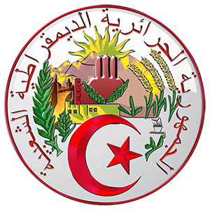

Алжир
- 
Краткая информация
-
Место: 10 (ТОП-10)
-
Площадь: 2 381 741 км²
-
Население: 44 226 000 чел. (2022 г.)
-
Столица: Алжир
-
Язык: Арабский
-
Валюта: Алжирский динар, .د.ج (DZD)
-
Крупнейшие города: Оран, Константина, Аннаба, Беджая, Батна, Сетиф, Джельфа
Георафическое положение и границы
-

Алжир
Государство в Северной Африке в западной части Средиземноморского бассейна, крупнейшее по территории африканское государство. Площадь составляет 2 381 741 км², что чуть больше, чем у Демократической Республики Конго.
Алжир граничит с Марокко на западе, Мавританией и Мали — на юго-западе, Нигером — на юго-востоке и Ливией и Тунисом — на востоке. Бо́льшая часть территории страны лежит в пустыне Сахара.
Рельеф
Сложный рельеф вызывает существенные местные различия погоды в течение всего года, и нередко в Северном Алжире на близких расстояниях наблюдаются разные климатические условия.
На формирование климата Северного Алжира сильно влияет рельеф соседнего Марокко. Марокканские горные массивы, превышающие высоты Алжира, задерживают влагу, идущую в Северную Африку с запада. По этой причине невысокая северо-западная часть страны (район Орана^ оказывается более засушливой, чем прибрежные горные районы в центре и на востоке, которые выше и более выдвинуты к северу. Эти районы получают максимальное количество осадков в стране, но сами оказываются заслоном, лишающим пограничный с Тунисом район значительной части приносимой с запада влаги.
Алжирская Сахара, относящаяся к континентальной части тропического пояса и являющаяся областью наибольшего прогревания приземных слоев воздуха, не только влияет на всю атмосферную циркуляцию в пределах Алжира, но и непосредственно воздействует на юг атласской части, усиливая его климатические отличия от более северных районов.
-

Сахара
-
Сахара
Влияние Средиземного моря распространяется лишь на узкую прибрежную полосу, где более высокая влажность воздуха, меньше амплитуда температурных колебаний, постоянны береговые ветры — бризы.
Время в Алжире
В Алжире 1 часовой пояс, поэтому во всех городах страны одинаковое время. Текущий часовой пояс: UTC+1 CET Разница во времени с Москвой: MSK-2 В Алжире на 2 часа меньше, чем в Москве В 2022 году нет перевода часов.
Климат в Алжире
В Алжире можно выделить 3 климатические зоны:
- прибрежная – средиземноморский влажный климат с перепадами давления, средняя температура января 7 — 10 °С, июля 35-40 °С;
- средняя — существенные перепады температур: летом до 35 °С, зимой до -5 °С;
- южная, в состав которой входит пустыня Сахара, — сухие ветры частенько влекут за собой песчаные бури.
В Северном Алжире климат субтропический, средиземноморский с теплой дождливой зимой и жарким, сухим летом. Средняя температура января на побережье составляет 12 °С, на межгорных равнинах — 5 °С, а в июле 25 °С. Летняя жара тяжело переносится из-за засушливых ветров. Часто бывают сильные засухи. Существенная часть осадков выпадает в ноябре – январе. Зимой в горных районах на вершинах до 10-20 дней и более держится снег.
В переходной зоне к Алжирской Сахаре климат более засушливый, средняя температура июля поднимается выше 30 °С, осадков — 200-400 мм в год. В Сахаре климат пустынный, очень сухой всего лишь 50 мм осадков в год, а иногда дождей не бывает и вовсе. Летняя дневная температура 40 ° С и выше, ночью — 20 ° С, а зимой днем — около 20 ° С, ночью падает до 0 ° и ниже.
Наиболее подходящие для отдыха будут берега средиземного моря. Именно тут стоит самая солнечная погода и находятся удобные и прекрасные пляжи. Зимы в этом месте тёплые и дождливые, температура воздуха составляет около 12 градусов даже в январе.
Природа
Из-за большой протяженности с севера на юг территория Алжира располагается не только в разных природных зонах, но даже в разных поясах. Алжир занимает зону жестколистных вечнозеленых лесов и кустарников, которая включает северную часть.
Северный Алжир занимает центральную часть Атласской природной области. В этой зоне много тепла и достаточное увлажнение. Поэтому природные условия этой части Северного Алжира наиболее благоприятны для жизни человека и сельского хозяйства.
Основная же часть страны занята тропическими полупустынями и пустынями Сахары. Различны геологическое строение, рельеф, гидрография этих двух смежных природных областей, их почвенно-растительный покров и животный мир. Таким образом, природа Алжира имеет двойственный характер.
Хотя Северный Алжир составляет менее 1/2 территории, здесь сосредоточено более 90% населения и почти вся хозяйственная жизнь страны. Влияние Сахары на природу Северного Алжира весьма велико. Оно усиливает африканскую специфику природы, создавая ее существенные отличия от стран неафриканского Средиземноморья. Природные условия Алжирской Сахары как части пустынной зоны Северной Африки в главных чертах охарактеризованы в очерке о природе всей Северной Африки, поэтому здесь мы сконцентрируем внимание преимущественно на природе Северного Алжира, имеющего к тому же немало внутренних физико-географических различий.
-

Северный Алжир
Особенности природы Северного Алжира, как части Атласской области, связаны не только с его положением на крайнем севере Африки, но и со спецификой геологического строения области. Эта тектонически подвижная область Африки окончательно сформировалась как горная складчатая система Атласа в третичное время в ходе альпийского тектонического цикла. В альпийскую стадию горообразования происходила и активная вулканическая деятельность, особенно в прибрежных районах, где многие мысы побережья сложены вулканическими породами. К западу от Орана до сих пор сохранились полуразрушенные древние кратеры и кратеры более молодых четвертичных вулканов. Свидетелями недавнего вулканизма остаются многочисленные горячие минеральные источники.
Как и большинство районов альпийской складчатости, территория Северного Алжира сейсмически подвижна, и землетрясения бывают здесь ежегодно, причем иногда очень разрушительные.
Крупные реки и озера Алжира
Государство Алжир имеет очень большую территорию, но 80 % этого огромного пространства занимает Сахара. Широко раскинулись песчаные пустыни (Большой Восточный Эрг, Большой Западный Эрг, Эрг-Шеш и Эрг-Игиди) и каменистые плато (Эль-Эглаб, Тадемаит, Тингерт, Танезруфт). Кроме того в юго-восточной части Сахары (Алжир) есть нагорье Ахаггар с высшей точкой 2906 метров (гора Тахат). Так как большую часть страны занимают засушливые территории с тропическим климатом, все крупнейшие реки и озера Алжира – это временные водотоки и водоемы, заполнение их происходит в зимний сезон дождей.
-

Пустыня Большой Восточный Эрг
-

Пустыня Большой Западный Эрг
Только на севере государства они впадают в обширное Средиземное море, а все остальные постепенно исчезают в засушливой пустыне. Вода рек Алжира имеет большую ценность для местных жителей и используется для водоснабжения и орошения. Когда сезон дождей проходит, высыхают все, даже крупнейшие реки и озера Алжира. Географическое положение их – основная причина этого. А озера, которые в основном соленые, превращаются в солончаки с толстой (60 сантиметров) соляной коркой. Оазисы в пустыне питаются за счет больших подземных водных запасов, ведь Сахара характеризуется тем, что при всей своей засушливости имеет большое количество грунтовых вод.
Самой крупной считается по праву река Шелифф длинной более 700 километров. Остальные крупнейшие реки Алжира поменьше: Иссер, Боуселам, Боудоуаоу, Джеди, Рхиоу, Мина, Меджерда, Тафина, Рхумел. Озера Алжира немногочисленны: Шотт-Мельгир и Чернильное озеро (Сиди Моаме Бенали).
- Река Шелифф
-

Река Шелифф
- Река Джеди
- Соленое озеро Шотт – Мельгир
-

Соленое озеро Шотт – Мельгир
-

Соленое озеро Шотт – Мельгир
- Чернильное озеро
-

Чернильное озеро
Река Шелифф – самая протяженная среди других водотоков Алжира. Точная ее длина – 725 километров, заканчивается она в Средиземном море. Площадь бассейна реки – 55 тысяч квадратных километров.
По полноводности она тоже опережает все крупнейшие реки Алжира. Исток Шелиффа находится в Сахарском Атласе и имеет название Себгага. Река течет по плато Туиль, где образует цепочку болот и небольших грязных водоемов. В этом месте река теряет большую часть своей воды.
Но затем река пополняется за счет притока Вади-Нахр-Оуссел, после него Шелифф делает поворот на север и далее течет по глубокому ущелью Тель-Атласе. Затем путь реки после города Оуд-Чорфа следует 230 километров на запад вдоль побережья Средиземного моря. Впадает Шелифф в море на расстоянии 13 километров от города Мостаганем. Шелифф интенсивно используется для хозяйственных нужд, как и другие реки и озера страны Алжир. На протяжении нее построено несколько ГЭС, вода используется также для орошения полей. Долина реки очень плодородна, в ней выращивают виноград, хлопок, цитрусовые фрукты. На этой реке расположились города Эш-Шелифф, Айн-Дефла, Хемис-Мильяна.
Река Джеди – это еще один крупный водный поток в Сахаре, длинна ее – 480 километров. Географические координаты 34 градуса северной широты и 6 градусов восточной долготы. Исток реки появляется на высоте 1400 метров (Сахарский Атлас). Направление течения постоянно – с запада на восток. Заканчивается Джеди в соленом озере Шотт-Мельгир. Место впадения находится ниже уровня моря на 40 метров. Растительность по берегам бедна, так как почва имеет высокую концентрацию соли. Джеди, как и другие крупные реки и озера страны Алжир, обеспечивает водой города. В данном случае это Сиди Халед и Лагуат, общее население – 165 тысяч человек.
Это крупнейшее озеро Алжира, находится на западе страны. Оно по-настоящему огромно: площадь – 6700 квадратных километров. Одна только средняя ширина достигает 131 километра. Летом этот водоем пересыхает, образуя солончак.
Зимой в период дождей озеро становится полноводным за счет воды стекающей с гор Орес. Озеро это весьма оригинально тем, что находится оно ниже уровня моря на 26 метров. Рядом с озером находится самая низкая точка в стране -40 метров. Также недалеко расположились города Тугурт, Эль-Уед и Бискра. Озеро является угодьем Рамсарской конвенции.
Секрет цвета
С первого взгляда можно подумать, что озеро приобрело такой оттенок в результате ужасной техногенной катастрофы. Но это не так. Научное объяснение этому эффекту следующее. В озеро впадают две реки. В одной вода содержит много солей железа, а в другой есть разные органические соединения в большом количестве, источник которых – торфяные болота.
Смешиваясь, воды этих рек образуют очень ядовитую субстанцию в ходе химических реакций. Полученная густая жидкость губительна для всего живого. Естественно, поэтому озеро совершенно необитаемо, в нем нет рыбы и других организмов. Однако местные жители утверждают, что можно использовать эту воду, чтобы писать на бумаге. Купаться в таком озере, конечно, не рекомендуется, чернила очень сильно въедаются в кожу и плохо смываются и, конечно, могут нанести ущерб здоровью.
Оазисы Алжира
В оазисах Алжира тоже встречаются небольшие водоемы. Оазисы - это такие живые участки пустыни, за счет которых произошло заселение Сахары. Для путника появление среди безжизненных золотистых песков зеленых райских уголков с пальмами и водоемами очень неожиданно и удивительно. Сами местные жители не воспринимают оазисы частью пустыни. Жить посреди пустыни было бы невозможно, жилище быстро бы занесло песком. Оазисы Алжира: Тимимун, Адрар, Бешар, Эль-Голеа. Они достаточно велики, в них есть аэропорты.
Оазис Тимимун очень красив, в нем есть соленое озеро, хотя жителям приходится не сладко, из-за того, что необходимо бороться с песчаными волнами, готовыми поглотить дома.
В оазисах развито сельское хозяйство. Здесь выращивают инжир, цитрусовые, злаковые, финиковые пальмы. Вода для растений добывается сложным способом. Система была разработана очень давно, но, несмотря на это, не утратила свою эффективность.
Вулкан Атакор
Атакор — вулкан в Алжире, вилайят Таманрассет. Атакор — вулканическое поле. Наивысшая точка — гора Тахат, высотой 2918 метров. Находится в пустыне Сахара.
Вулканическое поле Атакор занимает обширную территорию на юге Алжира 2150 км². Объём изверженной лавы составляет 250 км³. Преимущественно состоит из базальтов и базанитов, которыми сложены шлаковые конусы и застывшие лавовые потоки, лавовые купола. Первые вулканы появились на этой территории 35 миллионов лет тому назад. Завершающий этап вулканической деятельности в этом районе начался в эпоху Гелазского плейстоцена, около двух миллионов лет тому назад и продолжался до современного периода, закончившись около 10 тысяч лет назад, а возможно и раньше.
-

Вулкан Атакор
В отложениях изверженных пород археологи находили следы керамики и человеческой деятельности. В легендах туарегов развит местный фольклор, в котором отведено место и вулканам в данной местности. Фумарольная активность и частая несильная сейсмичность зафиксирована в историческое время.
Горы Алжира
- Атласские горы (Атлас)
- Нагорье Ахаггар (Hoggar Mountains)
- Национальный парк Джурджура
Атласские горы — большая горная система на северо-западе Африки, тянущаяся от атлантического побережья Марокко через Алжир до берегов Туниса. Длина хребтов — 2092 км. Наивысшая точка — гора Тубкаль (4167 м), находится на юго-западе Марокко.
Ахаггар — нагорье, расположенное на юге Алжира, в центральной части Сахары, к востоку от города Таманрассет. Ахаггар представляет собой фундамент Сахарской платформы, вышедший на поверхность 2 млрд лет назад. В пределах нагорья также выделяются молодые лавовые плато: Тассилин-Адджер, Тассилин-Адрар, Тассилин-Анахев, Тассилин-Атакор и Тассилин-Тахалра.
Джурджура — национальный парк на севере Алжира. Парк назван в честь одноименного горного массива и занимает площадь в 82,25 км². Джурджура была признана правительством Алжира природоохранительной зоной в 1923 году. Затем она приобрела статус национального парка в 1983 году. Джурджура – это настоящий биосферный резерват. От открывающегося взору путешественников пейзажа захватывает дух: пышные леса, многочисленные гроты и глубокие каньоны светятся в солнечных лучах! Здесь, в условиях природного разнообразия водятся редкие виды животных, в том числе находящиеся на грани вымирания маготы.
Преобладание горного рельефа, почти широтное простирание основных горных сооружений и другие особенности рельефа оказывают заметное влияние на климат страны.
Хаммам Мескутин (Hammam Meskhoutine)
Хаммам Мескутин — уникальный комплекс термальных источников, расположенный на территории Алжира, в пятнадцати километрах от г. Гельма. Температура воды в источниках уступает только исландским гейзерам и составляет 97 °С. Хаммам Мескутин находится на высоте 214 метров и окружен курортами, утопающими в зелени оазисов, в непосредственной близости от величественных скал. Здесь путешественники могут оздоровиться, очистить организм от шлаков и токсинов, а также в полной мере насладиться волшебной экзотикой Алжира.
-
Хаммам Мескутин
-
Хаммам Мескутин
Флора и фауна
Флора
Алжир имеет средиземноморский климат на севере и климат Сахары на юге, из-за чего растительный мир страны кардинально меняется с севера на юга. На севере, вы найдете кедры, сосны, шиповник, земляничное дерево и несколько видов дубов, такие как пробковые дубы. Плоскогорья покрыты травянистым растением эспарто, также называемое альфа, или ковыль тянущийся, которое используется в производстве канатов и эспадрильи. На территории Сахарского Атласа растут кипарисы, терпентинные деревья, пальмы и земляничные деревья. В самой Сахаре в основном растут акации и оливковые деревья.
Фауна
Наиболее распространенными представителями живой природы в Алжире являются кабаны, шакалы и газели, также нередки здесь лисы, тушканчики, несколько видов небольших кошек. Леопарды и гепарды встречаются крайне редко и находятся на грани исчезновения.
Обилие видов птиц делают страну пристанищем для орнитологов. Для тех, кто предпочитает других животных, например, змей, варанов и множество различных рептилий можно удивить в полузасушливых регионах страны. Алжир также является домом для множества видов, находящихся под угрозой исчезновения, которые в настоящее время охраняемых согласно алжирскому законодательству.
Наиболее исчезающими видом в стране является сервал – красивые представители диких кошек, которые крупней домашней кошки, но меньше, чем леопард или гепард. Его голова немного непропорциональна к телу, небольшая и с длинными, изящными ушами. Сервал также имеет самые длинные относительно тела ноги в семействе кошачьих, а его окрас схож с леопардом. Некоторые из этих элегантных животных, как полагают, все еще обитают в северных районах Алжира.
-
Сервал
Другое прекрасное существо, находящее под угрозой исчезновения в Алжире – это тюлень-монах. Они обитают в пещерах и на скальных порогах вдоль побережья Алжира и их численность стремительно сокращается из-за чрезмерной рыбной ловли и загрязнения. Тюлень-монах имеет низкую рождаемость и, как правило, на свет появляется лишь один детеныш. Это означает, что попытки увеличить популяцию этих тюлений являются медленным и затруднительными. Кроме сервала и тюленя-монаха, алжирских диких собак и представители отряда рукокрылые, также числятся под угрозой исчезновения.
Защита дикой природы Алжира
Исчезающих виды флоры и фауны, охраняются в 11 национальных парках и в ряде заповедников Алжира. Программы по защите дикой природы не функционируют должным образом, хотя есть несколько, которые действуют уже на протяжении длительного времени. Некоторые программы не связаны напрямую с защитой алжирской дикой природы, а посвящены разведению прирученных диких животных из семейства кошачьих и их реинтродукция в природу. Основное внимание в настоящее время сосредоточено на барбарийском льве, который является родным для региона, но не был обнаружен в дикой природе с 1922 года. К сожалению, попытки реинтродукции уже невозможны для некоторых алжирских животных, таких как ятаган орикс и газель-дама, которых не видели в стране боле десяти лет.
Также нуждаются в особенной защите родные для Алжира деревья. После столетий вырубки лесов – многие древние лесистые районы полностью исчезли. Есть еще области в горных районах где произрастает пробковый дуб, сосна и кедр, но значительные части Сахары были лишены деревьев. В Национальном парке Тассили-Н’Адджер – вымирающие виды растений, такие как сахарский миртл и кипарис защищены законом. Некоторым кипарисам в этом регионе уже более тысячи лет.
Природные ресурсы
Полезные ископаемые
Сложная геологическая история Алжира предопределила наличие в стране различных полезных ископаемых, изучение которых хотя и было довольно активным в годы французской оккупации, но далеко не исчерпано. Об этом говорят находки не только нефти и газа в Алжирской Сахаре, но и других месторождений, сделанные за годы независимости.
Важнейшие полезные ископаемые Алжира – нефть, природный горючий газ, руды железа, золота, полиметаллов, ртути, сурьмы; барит. Месторождения нефти и природного горючего газа большей частью расположены на северо-востоке Сахарской области, принадлежат Алжиро-Ливийскому нефтегазоносному бассейну.
-

Нефтяная и газовая промышленность
В стране велики запасы высококачественных железных руд, обычно содержащих и марганец; с древнейших времен ведется добыча руд свинца и цинка, мышьяка и ртути, сурьмы и меди. Многие полиметаллические и другие рудные месторождения имеют существенное значение для развития экономики Алжира. Подобно другим атласским странам, Алжир богат фосфоритами, минеральными солями, цементным сырьем, другими ценными строительными и поделочными материалами. Наряду с нефтегазовыми месторождениями сахарских районов это обеспечивает независимому Алжиру прочные природные предпосылки для развития промышленных отраслей, основывающихся на переработке минерального сырья.
Отдых
Пляжи Алжира
Алжир – африканское государство с огромной территорией, большую часть которой занимает Сахара. Это отличное место для знакомства с пустыней, ущельями и другими чудесами природы. В северной, приморской, части интересна древняя культура берберов, руины строений римлян, византийцев и финикийцев, музеи и мечети. Побережье Алжира растянулось почти на 1000 км вдоль Средиземного моря, однако для туристов большая часть пляжей обустроена хуже, чем в соседнем Тунисе. Выбрать лучшее место для отдыха на побережье поможет наш рейтинг пляжей Алжира.
- Аннаба
-
Аннаба
- Джиджель
-
Джиджель
- Зеральда
- Оран
-
Оран
-
.jpg)
Оран
- Сиди-Ферруш
Курортный город Аннаба расположился всего в 100 км от Туниса на берегу Бонского залива. Он привлекает тысячи туристов своими пляжами с золотистым песком. В Аннабе есть возможность заняться дайвингом и исследовать местные подводные пещеры.
Провинция Джиджель расположена в 250 км от столицы. Здесь расположились песчаные пляжи, бухты и заливы.
Зеральда - курортный город, расположенный недалеко от столицы Алжира.
Оран - второй по величине город Алжира находится на северо-западе страны в 350 км от столицы. Полоса пляжей тянется вдоль побережья Средиземного моря.
Пляж Сиди-Ферруш расположен на побережье Средиземного моря в окрестностях столицы страны. Самые лучшие песчаные пляжи сконцентрированы в этом месте.
Кухня
Характеристика национальной алжирской кухни Гастрономические традиции отдельной страны основываются на климатических условиях, позволяющих выращивать те или иные виды культур, а также заниматься животноводством. Алжир не стал исключением. Склоны и предгорья Атласских гор - это пастбища, оливковые, виноградные, апельсиновые, фисташковые плантации, поля для посева зерновых и овощных культур.
Средиземное море - источник рыбы, креветок, кальмаров. Большая часть населения сконцентрирована в северной части страны. Она расположена у берегов Средиземного моря, в субтропиках. Влияние на состав ингредиентов, используемых в алжирской кухне, оказывает продукция, производимая в аграрных и животноводческих регионах.
Алжир - мусульманское государство, религия которого не позволяет употреблять в пищу свинину. Это еще одна особенность, давшая развитие животноводческому направлению, включающему разведение овец, коз, коров, а также птицеводство. Важное значение для алжирцев имеет Рамадан - мусульманский пост, который правоверные соблюдают ежегодно на протяжении месяца. Некоторые из блюд подают для ежедневного утреннего и вечернего разговения, а другие - на праздничный стол в честь окончания Рамадана.
Особое внимание уделено популярной в Алжире баранине, которую тушат в таджине, зажаривают на углях. В дни важных семейных торжеств по мусульманскому обычаю устраивают жертвоприношение ягнят, которых потом зажаривают на вертеле. Сложившиеся географические, климатические, исторические и религиозные факторы сформировали характер алжирской кухни. Это разнообразие меню, включающее мясо, рыбу и морепродукты, овощи и крупы.
-

Национальная кухня
-
Национальная кухня
Способы приготовления пищи
Блюда национальной кухни - это пряные, часто острые, густые супы и рагу из баранины, говядины, птицы с добавлением картофеля, нута, овощей, оливок. В процессе приготовления ингредиенты долго тушатся или томятся в таджине, что позволяет раскрыться букету специй, входящих в рецептуру. Тушение и томление - основные виды обработки продуктов, используемые алжирскими хозяйками. Не менее популярными, но требующими мужского участия, считаются мясо, морская рыба и овощи, жаренные на мангале, кебаб, колбаски из фарша баранины, перец, баклажаны, помидоры.
Основные продукты и ингредиенты В основу ежедневного меню входят следующие продукты: зерновые - пшеничная крупа кускус, булгур, рис; бобовые - нут, чечевица, горох; овощи - помидоры, картофель, перец, баклажаны, сельдерей, цукини; яйца; баранина, козлятина, ягнятина, говядина, мясо птицы; рыба и морепродукты. В блюдах национальной кухни широко используются традиционные средиземноморские компоненты: оливки и оливковое масло, чеснок, ароматные травы, анчоусы.
Насыщенный вкус обеспечивают щедро представленные в рецептурах блюд восточные специи и пряности: зира, кориандр, несколько видов перца, анис, куркума, шафран, кардамон, гвоздика и др. Уровень жизни алжирцев разнится, поэтому не все семьи могут включать в ежедневный рацион мясо. Меню часто состоит из круп, макаронных изделий, овощей и хлеба.
- https://po-ehali.ru/klimat-alzhira/
- https://natworld.info/nauki-o-prirode/priroda-alzhira
- https://edatop.ru/1550-alzhirskaja-kuhnja.html
- https://pandia.org/365468/
- https://ru.wikipedia.org/wiki/Атакор
- https://syl-ru.turbopages.org/syl.ru/s/article/375194/krupneyshie-reki-i-ozera-aljira-opisanie
- https://wikiway.com/algeria/dostoprimechatelnosti-tag-gory/
- https://wikiway.com/algeria/khammam-meskutin/